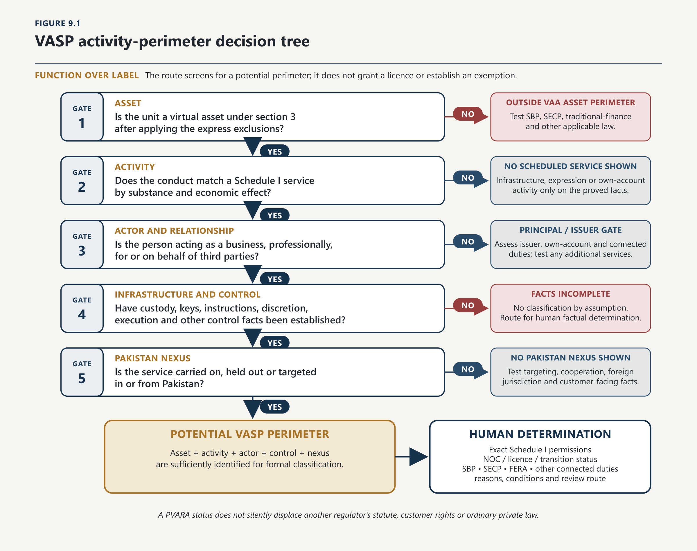
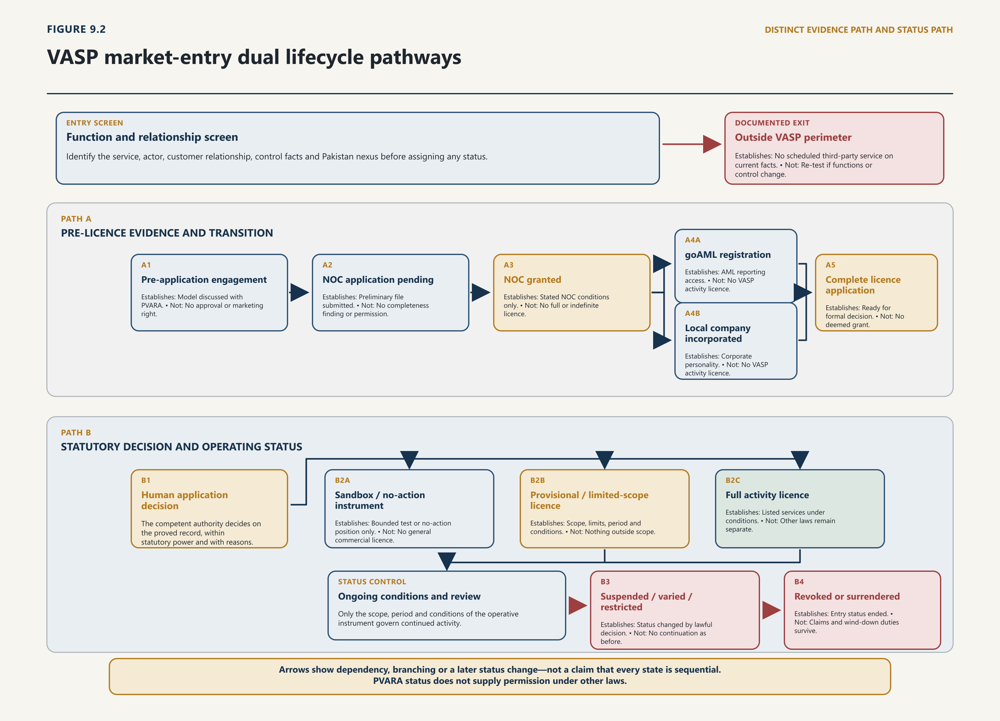

Chapter Nine · Part 2
Market Entry, Existing Participants and Transitional Legality
The Future of Digital Assets in Pakistan
Detailed Contents
Figures and Tables
1
Figure 9.1 - VASP activity-perimeter decision tree
2
Figure 9.2 - VASP market-entry dual lifecycle pathways
3
Table 9.1 - Actor classification and legal question
4
Table 9.2 - Evidence states and their limits
5
Table 9.3 - Statutory activities and readiness controls
6
Table 9.4 - Minimum paid-up capital under notified Schedule I
7
Table 9.5 - Issuer and product entry questions
8
Table 9.6 - Cross-border fact patterns
9
Table 9.7 - Verified position by legal layer
Principal Authorities
10
Primary legislation. Virtual Assets Act 2026 (Act XIII of 2026); Anti-Money Laundering Act 2010; Foreign Exchange Regulation Act 1947.
11
Subordinate legislation. Pakistan Virtual Asset Services Regulations 2026, SRO 1419(I)/2026; Pakistan Virtual Asset Services Activity Specific Regulations 2026, SRO 1420(I)/2026; PVARA No Objection Certificate Regulations 2025.
12
Administrative instruments. SBP BPRD Circular Letter No 10 of 2026; PVARA Advisory PVARA/ADV/001/2026.
13
Comparative and international material. FATF Updated Guidance (2021); Regulation (EU) 2023/1114 on markets in crypto-assets; Dubai VARA activity materials.
9.1 Functional Perimeter and Actor Classification
9.1.1 Regulate activity rather than label
14
[9.001] Market entry begins before an application form. It begins with a classification decision: what is the person actually doing, for whom, with whose assets or authority, and with what connection to Pakistan? The Virtual Assets Act 2026 answers through a functional perimeter. It applies to a VASP carrying on or holding itself out as carrying on a virtual-asset service in or from Pakistan and to an issuer offering, originating or distributing a virtual asset on its own behalf in or from Pakistan. A VASP is a person who, as a business, provides one or more scheduled services to third parties on a professional basis. Sections 18 and 50 then connect that definition to Schedule I and prohibit unlicensed VASP business.1
15
[9.002] Labels such as exchange, wallet, software company, protocol or “Web3 platform” do not decide the result. FATF’s interpretive approach is helpful, though not Pakistani law: look through nomenclature and technology to the underlying financial service. Pakistan’s Schedule I uses the same essential discipline of function over description.2
17
[9.004] Only after those questions are answered should the operator ask what permission and entry state are required. This ordering prevents two opposite errors: allowing regulated conduct to escape through a technology label, and licensing infrastructure or expression that does not perform the regulated function.

18
[9.005] The statutory exclusions demonstrate the method. General market information and non-individualised suggestions do not become advisory services merely because they concern tokens. A person dealing solely on its own account is outside broker-dealer services only if it does not execute customer orders and does not hold or control customer assets. Mere software, hardware or infrastructure that enables a user to retain exclusive control of private keys is not custody; custody appears when the provider safeguards or administers assets or control instruments on the customer’s behalf. Pure proprietary mining is not a VASP service, while mining for third parties involving customer assets or funds is. These are bounded exclusions, not immunity for the surrounding business.3
9.1.2 Holder, trader, issuer, intermediary and service provider
19
[9.006] Multi-function models require cumulative analysis. Holding keys, exercising discretion, converting assets or deploying customer property can add custody, management, exchange or lending permissions. One permission does not silently carry another.
20
[9.007] Schedule I has transfer, settlement and exchange services, not a free-standing payments licence. The PKR leg, remittance, client-money account, FX conversion or deposit-like promise may remain under SBP-administered law. The Act expressly preserves the Foreign Exchange Regulation Act 1947; PVARA permission is not a monetary passport.
21
[9.008] The perimeter therefore has a precise conclusion. Technology is relevant to control, custody, execution, resilience and evidence. It is not the legal test by itself. The legally decisive facts are the service performed, the relation to another person, the authority exercised, the asset or claim affected and the Pakistani connection.
22
[9.009] The Act uses related terms that must not be collapsed. An issuer is the legal person that originates or creates a virtual asset, retains primary control over initial supply, reserves or on-chain governance, may distribute it in an initial offering and bears prescribed ongoing obligations. Marketing, secondary-market facilitation or technical maintenance alone does not make a person an issuer without that control. A VASP professionally provides one or more services to third parties as a business. A licensee is a person holding a licence under the Act. The three concepts can overlap, but they are not synonyms.4
| Actor | Decisive feature | Likely legal question |
|---|---|---|
| Principal issuer | Originates/creates the asset and retains primary supply, reserve or governance control | Does the Act supply a valid issuer licence or registration route, and what offer, reserve, disclosure and marketing duties attach? |
| Issuance intermediary | Places, distributes, advises on or administers an issuance for another | Which broker-dealer, advisory, custody, transfer or issuance-service permissions are required? |
| VASP | Provides a scheduled service professionally to third parties | Which cumulative Schedule I categories apply, and is the person validly licensed? |
| Licensee | Holds the formal PVARA status and listed permissions | What exact activities, conditions, customer classes and current status appear in the public register and licence? |
| NOC holder | Holds preliminary regulatory clearance within the NOC instrument’s terms | What incorporation, AML registration and application steps are permitted; is any saved transitional operating authority specifically evidenced? |
| Customer | Receives or uses a virtual-asset service | What ownership, disclosure, complaint, asset-protection and exit rights exist? |
| Controller or sponsor | Holds the statutory control threshold or supplies founding capital/control | Does continuing fitness, propriety, source-of-funds and change-control approval apply? |
| Key individual | Performs a listed management, control, audit, risk, compliance or security role | Who approves the appointment, who assesses continuing fitness and who must report change? |
| Infrastructure supplier | Supplies code, hosting, wallet technology, analytics or other tooling | Does it remain a supplier, or does its real authority over keys, orders, assets or customers amount to a regulated service? |
| Bank or other financial institution | Provides accounts, settlement, payment, custody or another regulated financial service | What SBP/SECP permission and prudential law continues to apply in addition to the VA layer? |
23
[9.010] One group may be issuer, broker or custodian in different dealings. Each role must be tested; branding cannot erase separate entities or actual conduct.
24
[9.011] The word “platform” can conceal an information site, venue, dealer, broker, custodian, router, wallet or issuer portal. The licensing file should instead identify, for each product, the contracting entity, customer, asset, order path, key holder, fiat account, venue, settlement point, reserve holder, decision-maker, outsourced dependency and regulator. If those fields cannot be answered, the model is not ready for perimeter determination.
25
[9.012] Issuer classification also requires restraint. An issuer of an IVO, an ART, an FRT, another virtual asset, a tokenised security and a closed-loop utility representation do not enter through one undifferentiated “token licence”. The underlying rights and economic effect must be established first. A security does not lose securities-law character because it is tokenised; a fiat-referenced redemption promise cannot be assessed without the monetary and banking interface; an ART backed by real estate does not prove title to land merely because reserve assets are described in a whitepaper. Chapters 10–12 own those substantive regimes. This chapter determines the lawful door through which the actor may approach them.
9.2 Existing Virtual-Asset Holders
9.2.1 Holding, disposal and own-account activity
26
[9.013] Existing holders are not VASPs merely because they possess or dispose of virtual assets for their own account. Classification depends on the activity performed and whether the person provides a covered service for or on behalf of another person as a business. Other laws continue to apply: source of funds, ownership, tax, foreign exchange, proceeds of crime, contract and evidence are not displaced by the absence of a service relationship.5
9.2.2 Source, ownership, valuation and transaction evidence
27
[9.014] A prudent holder requires a defensible record: acquisition date and consideration, wallet or account control, counterparty and platform records where available, transfers, disposals, valuations, bank movements and tax disclosures. These records do not automatically prove legality or title, but they permit the relevant authority or court to distinguish holding from intermediation and lawful property from proceeds or an unexplained asset.
9.3 Own-Account P2P Transactions
9.3.1 When a participant remains a principal
28
[9.015] A principal buying or selling for its own account remains conceptually distinct from a person who arranges, matches, receives, transmits, controls or settles transactions for others. Peer-to-peer technology does not determine the legal category. Frequency, holding out, spread or fee, customer dependence, custody, discretion and settlement control may show that the person is providing a regulated service rather than merely trading.6
9.3.2 When repeated conduct becomes dealing, brokerage or another regulated service
29
[9.016] Banks participating in the fiat legs of P2P transfers do not thereby become parties to the virtual-asset trade, but regulated institutions may apply customer due diligence, transaction monitoring, source-of-funds inquiries and lawful restrictions. A bank statement proves that a payment occurred; it does not prove the legal character of the underlying asset or confer regulatory permission on a provider.
9.4 Incumbent Local Service Providers
9.4.1 Legacy operations, customers and contractual obligations
30
[9.017] Pakistan’s framework contains several entry states. Confusion between them is now a greater practical risk than ignorance of the Act. An applicant can possess official correspondence, a portal account, goAML registration, an incorporated company or sandbox admission without holding a licence. Conversely, an existing provider may assert transitional continuity without producing the complete application, interim direction or saved instrument on which that continuity depends.
31
[9.018] The states should be recorded as follows:
| State | What it establishes | What it does not establish |
|---|---|---|
| Outside VASP perimeter | On documented facts, no scheduled professional third-party service is performed | Immunity if functions, control or customer relations change; exemption from issuer or other financial law |
| Pre-application engagement | PVARA has been approached; a model may be discussed or clarified | Approval, NOC, licence, safe harbour or right to market |
| NOC application pending | Preliminary file submitted for assessment | Completeness, permission to incorporate, goAML registration or operating authority |
| NOC granted | The permission and conditions stated in the NOC, including the predecessor regime’s incorporation/goAML functions where lawfully continued | Full VASP licence; authority for every activity; indefinite transition |
| goAML registration | Reporting-entity access and AML reporting capability/status | Prudential, conduct, customer-asset or activity licence |
| Local company incorporated | Corporate personality under Pakistani company law | Regulatory permission to perform VASP business |
| Complete licence application | Statutory transition may attach if the Act’s conditions are met; the application is ready for decision | A deemed grant, an unlimited continuation or permission for new services |
| Sandbox/incubation or no-action instrument | Only the bounded testing or enforcement position in the instrument | General commercial licence, customer entitlement or statutory amendment |
| Provisional or limited-scope licence | The precise activities, customers, limits, period and conditions specified in a valid licence | Unrestricted activity or permission outside its scope |
| Full activity licence | Formal status for listed services, subject to conditions and ongoing law | Permission under SBP, SECP, foreign-exchange, tax, data or other law; permission for unlisted services |
| Suspended, varied or restricted | Status altered by a reasoned lawful decision | Permission to continue as before |
| Revoked or surrendered | Entry status ended, subject to the legal effective date | Disappearance of customer claims, records, investigation, restitution or wind-down duties |
32
[9.019] The lifecycle therefore contains two parallel tracks: the ordinary new-entrant route and the existing-provider transition.

9.4.2 Migration into a statutory licensing system
33
[9.020] The current legal position distinguishes the NOC route from the statutory licensing framework. The Act and notified 2026 Regulations control; earlier consultation drafts and handbooks are regulatory history or guidance only and do not substitute for the notified text.
34
[9.021] Section 70 gives an existing provider six months from commencement to apply or cease. A person who submits a complete application within that period may continue its existing services, provided it complies fully with interim directions and the Act’s core obligations. The provision is not a moratorium for new activity, a waiver for incomplete applications or a deemed licence. PVARA’s current public implementation statement identifies 5 September 2026 as the deadline for transitional persons operating on 5 March 2026 or earlier to submit the NOC application or cease operations. That administrative statement should be retained with the statutory text and the applicant’s dated filing evidence.7
35
[9.022] Section 74 separately saves things done, actions taken, appointments made, instruments issued and accrued rights or liabilities under the lapsed 2025 Ordinance as if done under corresponding provisions of the Act. Saving is item-specific. It requires identification of the predecessor act or instrument, the corresponding Act provision, its original terms and any inconsistency with the new Act. It does not turn every Ordinance-era NOC or regulation into an unlimited licence or authorise future conduct that section 50 prohibits.8
36
[9.023] This entry-state discipline is not semantic. Banks, customers, counterparties, auditors and foreign regulators will make different decisions depending on whether they see an NOC, complete application, sandbox permission or licence. The public register must allow those distinctions to be verified without inference. Until it does, every operator should maintain its own status memorandum, underlying instruments and activity-by-activity permission schedule and should ensure that marketing uses the exact status rather than a promotional approximation.
37
[9.024] Existing providers carry customer and contractual obligations into transition. They must preserve records, safeguard assets, honour withdrawal and disclosure duties and avoid expanding beyond any protected existing activity. Migration into the statutory system is not a paper relabelling exercise: entity, governance, fitness, capital, systems, AML, custody and activity permission must be satisfied under the Act and notified Regulations.
9.5 No General Amnesty, Exemption or Grace Period
9.5.1 What current law does not expressly provide
38
[9.025] The current framework contains no general amnesty, exemption or grace period for every Pakistani citizen, holder, platform or service provider. Section 70 is a conditional transition for a defined existing provider; section 74 is a savings provision for identified acts and instruments of the predecessor regime. Neither provision legalises every prior transaction, excuses tax or foreign-exchange liability, or creates immunity from criminal, securities, banking or private law.9
9.5.2 Why disclosure, banking history or market longevity does not create immunity
39
[9.026] Voluntary disclosure to FBR, use of a bank account, longstanding operation, public visibility or previous engagement with an authority may be evidentially relevant. None is a licence, adjudication of title or statutory amnesty. Fiscal recognition of an item as an asset for declaration purposes can coexist with regulatory, foreign-exchange or evidential questions under other law.
9.6 Statutory Transition and NOC Routes
9.6.1 Who may rely on a transition
40
[9.027] Section 19 creates a sequence that is unusual but intelligible. A person intending to incorporate a company whose primary objective is virtual-asset services must first apply to PVARA for an NOC. Only after incorporation does the person apply for a licence. The NOC is therefore a pre-incorporation regulatory gate; it is not the licence that section 50 requires for VASP business. PVARA’s licensing sequence distinguishes NOC, AML registration, local incorporation and licence. The notified 2026 Regulations now govern the delegated licensing route; earlier consultation pages and draft handbooks are relevant only to regulatory development and cannot displace the notified instruments.10
41
[9.028] For a new entrant, the defensible route is consequently:
42
[9.029] The 2025 NOC Regulations are important but legally awkward. They were drafted under the Ordinance. They describe an NOC as approval for goAML registration and permission to incorporate a local entity. They also purported to allow four “AML-Registered Services”—broker-dealer, custody, exchange and virtual-asset derivatives—after goAML registration and before full licensing, subject to conditions. Section 74 may preserve a particular NOC or action under a corresponding Act provision. But the later Act makes licensed VASPs financial institutions for AML purposes, enacts section 50’s prohibition and does not reproduce a general AML-registration exception to licensing.
9.6.2 Conditions, duration, scope and revocation
43
[9.030] Current banking instructions reinforce the narrower construction. SBP’s BPRD Circular Letter No 10 allows banks to open limited-purpose accounts for NOC holders so that they can complete licensing formalities. It states that additional services, including virtual-asset-related transactional activity, may be extended only after PVARA grants a licence; banks must verify that licence and segregate the licensed VASP’s PKR client-money account.11 That circular does not determine every PVARA question, but it is powerful evidence that NOC status and licensed transactional operation are different.
44
[9.031] The resulting rule should be conservative and document-based. A new NOC does not, without more, authorise customer-facing VASP activity. An existing provider relying on an Ordinance-era NOC must identify the exact NOC, goAML status, saved corresponding provision, section 70 application, interim directions, existing services and conditions. General website language or an unparticularised assertion of “regulatory approval” is insufficient. Where PVARA intends a saved NOC holder to continue, it should issue a reasoned Act-era status confirmation identifying the permitted activities, customers, conditions, duration and route to decision.
45
[9.032] The notified Regulations now supply the delegated application procedure, including the relationship between the NOC, incorporation, the licence application, completeness review, activity-specific permission, decision and register. Earlier consultation periods or proposed deadlines should not be cited as current law unless they appear in the notified text. The operative route is the Act read with the notified Regulations, and every applicant remains subject to the conditions and commencement terms of those instruments.12
46
[9.033] The NOC file itself is nevertheless demanding. The current predecessor form asks for services, business model, customers, fiat rails, stablecoin handling, custodians, banks, payment processors, cross-border delivery, directors, controllers, beneficial owners, key individuals, source of wealth and funds, financial resources, technology, AML systems, outsourcing and foreign licences. Applicants should answer at legal-entity and activity level. A foreign group licence may establish experience or regulatory history; it does not establish Pakistani permission.
47
[9.034] The incorporation sequence creates commercial friction because promoters may need staff, systems and contracts before a regulated company exists. That problem does not justify informal operation. A lawful administrative response would permit a specifically named pre-incorporation promoter vehicle or conditional incorporation with restricted objects pending licensing, while prohibiting customer activity. Any such route must be grounded in PVARA–SECP procedure and published, not improvised through private correspondence.
9.7 Grandfathering, Regularisation and Safe Harbour
9.7.1 The difference between existing law and proposed policy
48
[9.035] Grandfathering, regularisation and safe harbour are distinct legal designs. Grandfathering preserves an identified pre-existing status or activity; regularisation offers a route to disclose and cure specified historical non-compliance; a safe harbour limits enforcement for defined conduct during a supervised period. None should be inferred from administrative tolerance.
9.7.2 Requirements for any valid future regularisation mechanism
49
[9.036] A future mechanism would require a competent maker, clear eligibility date, covered persons and conduct, excluded offences, disclosure and evidence requirements, tax and foreign-exchange treatment, customer protection, duration, conditions, revocation and interaction with investigation and private rights. Without those elements, ‘regularisation’ is a policy slogan rather than law.
9.8 New Entrants, Licensing and Activity Permission
9.8.1 Application, fitness, governance and capital
50
[9.037] Schedule I to the Act contains ten service families. The notified capital schedule separates fiat-referenced-token and asset-referenced-token issuance, producing eleven capital rows, while the Activity Specific Regulations supply the operative service-level controls. The Act controls the perimeter; the useful operational question remains what risk each permission is meant to control.
| Statutory activity | Perimeter trigger | Core licensing and supervisory controls |
|---|---|---|
| Advisory | Personalised recommendation based on a customer’s circumstances | Suitability information; documented advice basis; product universe and limitations; conflicts, referrals and inducements; distinction from general commentary and execution |
| Broker-dealer | Arranging/facilitating orders, accepting orders and consideration, customer-facing principal dealing, customer-asset market making, or issuer placement/distribution | Order handling; agency/principal capacity; best execution or fair pricing; venue review; allocation; proprietary-trading controls; issuer due diligence |
| Custody and administration | Safekeeping/administering assets, keys or means of control for customers | Legal segregation; wallet architecture; key generation and recovery; access control; daily reconciliation; proof of reserves; insolvency analysis; withdrawal and incident procedure |
| Exchange | VA/fiat or VA/VA conversion, matching and execution, or order-book operation | Participant and listing rules; fair matching; market surveillance; price/data integrity; trading halts; settlement arrangements; resilience; conflict controls |
| Lending and borrowing | Principal or intermediary transfer of virtual assets under a return obligation | Product governance; counterparty credit; collateral, margin and liquidation; liquidity mismatch; withdrawal terms; consent and limits for re-use; stress testing |
| Derivatives | Offering, facilitating, executing, clearing, trading or arranging VA-referenced derivatives | Product/legal classification; SECP/SBP boundary; client appropriateness; margin and collateral; leverage limits; valuation; liquidation; market conduct; stress testing |
| Management and investment | Fiduciary/agency management or discretionary staking within a broader mandate | Written mandate; suitability; portfolio construction; valuation; custody and venue controls; allocation; conflicts; fee and performance reporting; consent for asset deployment |
| Transfer and settlement | Moving virtual assets between parties, wallets or locations for customers, excluding exchange execution | Instruction authentication; destination validation; finality disclosure; failed-transfer procedure; reconciliation; safeguarding; Travel Rule; sanctions and third-party rails |
| Issuance services | Creation, initial offer, supply/reserve control, redemption, governance and required disclosures | Actor/status route first; programme approval; whitepaper; reserve and custody; redemption; marketing; lifecycle and wind-down; additional permissions for intermediaries |
| Mining-related services | Third-party mining involving customer assets or funds; pure own-account mining excluded | Customer agreements; asset and reward accounting; infrastructure resilience; pool/protocol due diligence; conflicts with proprietary mining; outage and payout procedure |
51
[9.038] The notified activity-specific framework usefully prevents licence leakage. Custody does not authorise lending, staking or management. Exchange does not itself authorise derivatives or standalone margin finance. Transfer does not authorise conversion, custody or issuance. Broker-dealer does not convert incidental holding into indefinite custody. Management does not erase consent, custody or leverage requirements. Multi-activity firms should therefore build a permission matrix for every customer journey, not merely choose the category that best describes the front-end screen.13
52
[9.039] The category boundary must also be tested at each operational hand-off. An exchange order can produce broker execution, temporary asset control, settlement, fiat movement and custody. The application should show the responsible legal entity and permission for every stage, including failures and reversals. If the exchange outsources custody, its own exchange permission remains, the custodian needs its permission, and the exchange retains duties arising from its selection, integration, disclosures and customer contract. Outsourcing reallocates performance; it does not erase the regulated function.
53
[9.040] Credit and leverage require an equally granular split. Lending involves a return obligation and exposes customers to borrower, collateral and liquidity risk. Derivatives create a referenced exposure, margin and close-out architecture that may also fall within SECP jurisdiction. A spot exchange offering margin can therefore engage exchange, lending and derivatives questions at once. The applicant must identify who extends credit, owns collateral, sets margin, liquidates positions, bears shortfall, controls price sources and contracts with the customer. “Ancillary” is a conclusion supported by limited function and duration, not a word that creates permission.
54
[9.041] The consultation history also illustrates why guidance requires a firm legal foundation. Before notification, draft handbooks described enforceability, waivers, suspension, operational duties, approval requirements, settlement timing, significant-issuer thresholds and possible treatment of large proprietary miners. Some proposals were sound policy, but a handbook could not independently create generally applicable obligations, enlarge Schedule I, invent a registration framework, impose capital or supply coercive power. Current mandatory duties must be traced to the Act, the notified Regulations or a lawful licence condition; explanatory material may particularise that legal frame but cannot enlarge it.
55
[9.042] The activity matrix also shows what is missing. There is no free-standing payment category, no general blockchain-software category and no automatic licence for decentralised architecture. Payment and fiat rails require SBP analysis. A software provider is outside custody only while the user retains exclusive control; administration, intervention rights or operational control can change the result. Decentralised governance must be traced to the persons who develop, control, profit from or exercise sufficient influence over the service. “No central intermediary” is a factual proposition to test, not a conclusion to assume.
56
[9.043] The Act sets the core eligibility architecture. Section 19 requires the NOC-before-incorporation route. Section 20 applies continuing fit-and-proper standards to controllers, sponsors, chief executives, directors and key individuals, requires corporate-controller scrutiny and requires a registered office in Pakistan with at least one ordinarily resident key individual vested with operational and decision-making authority. Sections 21–22 require listed permissions, continuing capital, reporting, approval for material control or business change, risk management, compliance, cybersecurity and fees. Sections 24–29 add customer-asset segregation, fiduciary duty, consent limits, financial resources, custody, proof-of-reserves, audit and potential safeguards.14
57
[9.044] Fitness is not a one-time character certificate. It should answer four continuing questions:
58
[9.045] The statutory controller threshold is 20 per cent of voting power, ownership or share capital, or significant influence or control by other means. Formal holdings below 20 per cent do not end the inquiry where agreements, nominees, vetoes, finance or technology dependence confer real control. The ownership chart should reach natural-person beneficial owners and identify group entities, trusts, nominees, financing arrangements and reserved matters. Material change requires prior approval where prescribed; parties should not complete first and seek forgiveness later.
59
[9.046] The notified framework supplies detailed governance, continuing fitness, local-presence, risk, compliance, audit, outsourcing, recovery and wind-down controls. Regulation 31 and Schedule I prescribe the following paid-up capital floors:
| Licence category | Minimum paid-up capital |
|---|---|
| Advisory | PKR 15 million |
| Broker-dealer | PKR 75 million |
| Custody | PKR 200 million |
| Exchange | PKR 500 million |
| Lending and borrowing | PKR 500 million |
| Derivatives | PKR 500 million |
| Management and investment | PKR 200 million |
| Transfer and settlement | PKR 200 million |
| FRT issuance | PKR 300 million |
| ART issuance | PKR 300 million |
| Mining-related services | PKR 500 million |
60
[9.047] These are current notified figures, not consultation proposals. The licensee must also maintain the liquidity and other prudential conditions in regulations 31-35 and any lawful, reasoned add-on or licence condition.15
9.8.2 Entity status versus permission to conduct each function
61
[9.048] The notified Schedule now prescribes a distinct PKR 500 million floor for mining-related services. That entity-level entry requirement does not itself answer whether a particular customer journey also performs custody, transfer, exchange or another separately controlled function; the permission matrix remains decisive.
62
[9.049] Capital must also be more than an entry cheque. The notified Regulations address paid-up capital, liquidity, risk-based add-ons, notification and restoration, and their supervision must continue to distinguish firm capital from customer assets and token reserves. A PKR 300 million issuer capital floor, for example, does not replace the distinct reserve and redemption obligations of an FRT or ART; reserve assets are held for token obligations, not general business loss absorption.
63
[9.050] For multiple permissions, regulation 31 permits a risk-based methodology and prudential add-ons, while regulation 32 uses the highest applicable liquidity floor unless a separate and non-overlapping risk justifies an additional amount. The licence and reasons should state the resulting capital, liquidity, evidence, maintenance point and any add-on. Each answer changes loss-bearing capacity and must remain public, consistent and reviewable.
64
[9.051] Fitness procedure needs the same discipline. The applicant should receive the adverse concern and a fair opportunity to answer; PVARA should record why a matter is relevant to the proposed function, whether remediation or a role restriction is sufficient, and when reassessment occurs. A historic event is not self-applying proof of present unfitness, while concealment during the application can independently demonstrate lack of candour.
65
[9.052] The notified Regulations permit proportionate, limited and conditional decisions and risk-based prudential add-ons. Proportionality remains legitimate only within published parameters. Generally applicable floors belong in valid Regulations; individual conditions may adjust risk within enacted criteria, with reasons and without creating private law for favoured applicants. Transparent methodology is essential to prevent capital discretion from becoming an entry barrier administered by correspondence.
66
[9.053] Licensing determines whether the firm may enter. Client onboarding determines whether a particular relationship may begin and on what terms. The two decisions overlap but are not interchangeable. A valid licence does not prove that every product is suitable, that CDD has been completed, that a token may be marketed or that customer assets may be used.
67
[9.054] The Act supplies several direct duties. Licensees owe integrity, fair dealing and best-interest duties; customer assets must be segregated and protected from the licensee’s estate; encumbrance or re-use requires explicit, informed and revocable written consent; issuers must publish prescribed whitepapers and ongoing material disclosures; marketing requires the issuer status in section 43; and VASPs and issuers have AML reporting, record and control duties. The detailed onboarding sequence is governed by the notified Regulations, but those primary duties already determine its minimum architecture.16
68
[9.055] An operator-ready onboarding file should record:
69
[9.056] The notified Activity Specific Regulations now provide service-specific detail. Advice requires reliable client information and a reasoned basis. Brokers must disclose agency or principal capacity, execution route, spreads and conflicts. Custodians must explain wallet architecture, insolvency treatment, access and return. Exchanges need listing and market rules. Lending arrangements must disclose collateral, re-use, withdrawal restrictions and loss allocation. Derivatives require leverage, margin, liquidation and total-loss warnings. Managers need written mandates, valuation and fee rules. Transfer providers must explain finality, failures, network dependencies and screening. These controls take legal effect through the notified Activity Specific Regulations, the VAS Regulations, the licence and the primary Act as applicable; earlier consultation handbooks remain historical aids only.17
70
[9.057] Consent must be specific. A click accepting general terms is not necessarily explicit and informed consent to lend, stake, pledge or rehypothecate customer assets. The customer should know the asset, purpose, counterparty or category, limit, duration, withdrawal effect, reward, loss allocation and revocation consequence. Custody consent cannot become blanket treasury authority. Nor can “yield” marketing obscure that assets are exposed to borrower, protocol, slashing, liquidity or insolvency risk.
71
[9.058] Section 47 applies the Travel Rule to transfers meeting the threshold prescribed by PVARA. Regulation 100 fixes that threshold at the PKR equivalent of USD 1,000 and specifies originator, beneficiary, availability and risk-control requirements. Operators must collect, transmit, secure and retain the prescribed information while also complying with independently applicable federal AML/CFT requirements.18
72
[9.059] Marketing requires an upstream legality check. A VASP’s licence to distribute or list does not cure the issuer’s missing status under section 43. A whitepaper is not a prospectus approval, reserve guarantee, title certificate or state endorsement. An MoU, pilot, sandbox, NOC, goAML registration or application must be described exactly. PVARA’s April 2026 advisory says that pilots, stablecoin uses, tokenisation and related announcements require prior engagement and authorisation where they result in or directly enable regulated services. Early engagement is prudent; the advisory route cannot itself replace the Act’s required licence or registration.19
73
[9.060] Stablecoin and tokenised offers require layered disclosure. An FRT must identify the redemption obligor, currency, reserves, custodian, legal segregation, timing and suspension conditions. An ART must state the referenced claim, valuation, reserve custody, enforceability and what token holding does not transfer. A tokenised security remains subject to its securities offering and market regime. Chapters 10–11 examine those financial-perimeter and private-law layers; this chapter requires the controlling claim to be disclosed before onboarding.
9.9 Issuers, Offers and the Section 43 Gap
9.9.1 Token issuance and public offers
74
[9.061] Issuer entry is the chapter’s most serious statutory defect. The Act plainly intends to regulate issuers. Section 2 applies to an issuer that offers, originates or distributes a virtual asset on its own behalf in or from Pakistan. Section 3 defines the issuer by primary control over creation, initial supply, reserves or governance. Sections 30–33 regulate IVOs, FRTs, ARTs and significant issuers. Section 42 requires whitepapers and continuing disclosures. Section 43 prohibits advertising or marketing a virtual asset unless the issuer holds a valid “license or registration under this Act”. Schedule I also lists “Virtual Assets Issuance Services”.20
75
[9.062] But the route in sections 18–23 is framed principally around VASPs. Section 3 defines a VASP as a professional business providing services to third parties; section 19 begins with a company whose primary objective is “Virtual Asset Services”; section 21 speaks of a licence granted to a VASP and its listed services. A principal issuer originating its own token may be within section 2 as an issuer without being a third-party VASP. Schedule I’s issuance service can describe an intermediary acting for an issuer, yet section 43 demands a licence or registration for the issuer itself. The Act does not then provide a dedicated issuer application, eligibility, grant, register, variation, suspension, revocation, wind-down and renewal route.
76
THE ISSUER-STATUS GAP Issuer in/from Pakistan | +--> ss 30-33: IVO / FRT / ART / significant issuer duties +--> s 42: whitepaper and ongoing disclosure +--> s 43: no marketing without issuer licence or registration | v Where is the complete issuer status route? | +--> ss 18-23: principally a VASP licensing route | (VASP = professional third-party service provider) | +--> Schedule I: issuance services exist | (may cover intermediary and some issuer functions) | +--> no complete issuer-only application and lifecycle | v Primary amendment required; subordinate instruments or handbooks cannot supply the missing status alone
77
[9.063] This is not cured by reading every issuer as a VASP. That interpretation conflicts with the Act’s deliberate use of two defined actors and its independent issuer scope. Nor is it cured by ignoring section 43, because marketing without the specified status is expressly prohibited and IVOs are separately prohibited except under the Act and its subordinate law. Legal certainty is especially important where breach can trigger blocking, sanctions or prosecution.
78
[9.064] The notified framework recognises the practical need but also reveals the limits of delegated repair. Its issuance provisions describe an “Issuance Licence” covering creation, issuance, initial offer, administration, supply, reserves, redemption, governance and disclosures. Its notified application forms, capital schedule and issuance-specific provisions then narrow the detailed categories to FRT and ART issuance, each with the capital treatment stated in Schedule I. The Activity Specific Regulations prescribe programme approval, reserve, redemption, whitepaper, significant-issuer and limited-scope mechanics. Those controls may be sensible for reserve-backed tokens. But they do not supply clear treatment for every other virtual-asset issuer, and the Regulation cannot safely create from scratch the offence-triggering issuer status that primary law leaves incomplete.21
9.9.2 Securities, disclosure and market-conduct interfaces
79
[9.065] The present position must distinguish an Asset Referenced Token incubation or sandbox route from full licensing under the notified framework. Application to a sandbox or incubation phase may support controlled testing under section 35. It is not proof that the applicant holds the licence or registration required by section 43, and it cannot authorise an unrestricted public offer unless a valid instrument expressly does so.22
80
[9.066] Not every issuer requires the same route:
| Issuer/product | Primary entry question | Additional interface |
|---|---|---|
| IVO of a virtual asset | Pakistani legal entity, approval/disclosure route and issuer status under ss 30, 42–43 and 51 | Customer money, offer conduct, tax, AML and any underlying right |
| FRT | Issuer status plus 100% HQLA/eligible reserve, par redemption, audit, AML and insolvency protection | SBP monetary, banking, payment, reserve-custody and FX law |
| ART | Issuer status plus full underlying-asset backing, custody, valuation, disclosures and holder protection | Law governing the underlying real estate, commodity, security or claim; SECP/SBP where applicable |
| Other virtual asset issuance | Issuer status, whitepaper, marketing and Schedule I analysis | Determine whether the notified ART/FRT route applies and whether primary legislation remains incomplete |
| Tokenised security or regulated financial instrument | First determine exclusion/SECP or SBP jurisdiction by substance | PVARA may regulate additional VA risks only through lawful coordination; no regulatory erasure |
| Closed-loop or qualifying non-investment NFT | Verify every statutory exclusion condition | Reassess if transferability, redemption, investment use or external market develops |
81
[9.067] Comparative models illuminate the drafting choice without dictating it. EU MiCA separates authorisation of crypto-asset service providers from the authorisation and whitepaper regimes for ART and e-money-token issuers. Dubai VARA uses activity licences while placing issuance under a dedicated issuance rulebook and distinguishing issuance categories. Pakistan need not copy either model, but both demonstrate the value of stating whether issuer status is a licence, registration, offer approval or a combination and giving it its own lifecycle.23
82
[9.068] A primary-law amendment should therefore: create a dedicated issuer application and registration/licensing route; classify IVO, ART, FRT and other issuer types; state when a principal issuer is also a VASP; allocate security, payment and foreign-exchange interfaces; require whitepaper and marketing approval where appropriate; provide exemptions in primary policy; establish reserves, custody, redemption, governance and wind-down; publish issuer status; and connect refusal, sanction and appeal. A consequential notified amendment to the Regulations can then supply forms, thresholds and procedures within that enacted architecture.
9.10 Foreign VASPs and Cross-Border Offering
9.10.1 Territorial nexus and local presence
83
[9.069] Foreign status creates two distinct questions: does Pakistan’s law apply to the offering, and what establishment is required to operate lawfully? Section 2 applies to VASP services and issuer conduct in or from Pakistan. Section 4 authorises extraterritorial investigation and enforcement to the fullest lawful extent and requires Regulations to prescribe when an outside service is or is not deemed offered or marketed to persons in Pakistan. Section 20 requires a Pakistani registered office and resident key decision-maker; section 50 requires the VASP to be a Pakistani company and licensed. A foreign licence may support fitness and supervisory cooperation. It does not passport the firm into Pakistan.24
84
[9.070] The 2025 NOC Regulations created a “foreign applicant” route for an overseas entity already providing certain services in Pakistan: foreign-entity goAML registration, followed by local incorporation and the future licensing application. That bridge sought immediate AML visibility. It did not remove local establishment, and its operating effect after the Act must be tested against sections 50, 70 and 74. A foreign group should not describe goAML registration of its overseas entity as a Pakistani VASP licence.
85
[9.071] The notified Regulations supply a more precise targeting test. It would consider solicitation, promotion, Pakistani onboarding, PKR rails and material Pakistani connections and would say that website accessibility alone is insufficient where there is no marketing, onboarding, PKR channel or Pakistan-directed distribution and reasonable geo-blocking is used. Section 4 assigns the deeming conditions to Regulations; the notified text therefore supplies the operative delegated test within the limits of that parent power.25
| Cross-border fact pattern | Legal treatment |
|---|---|
| Foreign website merely technically accessible; no Pakistan targeting, onboarding, PKR rail or local distribution | Requires factual monitoring and other-law analysis; apply the notified targeting test and the relevant other law |
| Active solicitation, Urdu/Pakistan campaign, Pakistan affiliate, PKR rail or onboarding of Pakistani customers | Strong Pakistani offering/service connection; seek PVARA determination and do not rely on server location |
| Foreign VASP with overseas licence and Pakistani customers | Foreign licence is evidence, not Pakistani authority; local-company/licence and transition questions remain |
| Foreign group receives NOC/goAML registration | Preliminary/transitional status only within exact instrument; no automatic full licence |
| Pakistani licensed subsidiary uses foreign group technology, liquidity or custody | Pakistani licensee remains accountable; outsourcing, data, audit, access, FX and additional permission questions apply |
| Foreign issuer offers a token into Pakistan | Issuer scope, s 43 status, offer disclosures and underlying security/payment law must be resolved separately from any distributor licence |
9.10.2 Recognition, reliance and enforcement
86
[9.072] FATF generally locates primary AML supervision with the jurisdiction where the VASP is incorporated, while requiring licensing/registration and international cooperation. Pakistan may nevertheless regulate services within its territorial nexus and require local establishment under its Act. Those propositions are complementary: home supervision does not create host-market access, and host law should not claim practical enforcement capacity without cooperation, evidence and a legally defined targeting rule.26
87
[9.073] Foreign issuance exposes an additional textual gap. Section 2 speaks of an issuer acting “in or from” Pakistan, while section 4(2)’s future deeming rules concern a Virtual Asset Service conducted outside Pakistan. Neither phrase clearly supplies a complete “offer into Pakistan” test for a foreign principal issuer. Final amendment should state that gateway rather than assuming the VASP targeting rule answers it.
88
[9.074] Local presence must be substantive. A registered office and resident key individual should supply accessible records, operational authority, regulatory response, complaint handling and wind-down capacity. A shell that books Pakistan business while every decision, key, ledger and employee remains beyond reach defeats the purpose. Conversely, local presence should not be used to require unnecessary duplication where secure group systems, auditable outsourcing and enforceable access achieve the statutory outcome. The notified Regulations should state the required substance and the evidence by which it is assessed.
89
[9.075] Banking remains a separate gate. SBP-regulated entities must verify the PVARA licence before transactional VASP banking, maintain segregated PKR client-money accounts where applicable, prohibit cash deposits/withdrawals in those accounts and comply with foreign-exchange and AML law. An offshore settlement path or stablecoin does not permit the parties to route around FERA or SBP requirements. The PVARA licence answers the VA service question; it does not legalise an otherwise impermissible currency or payment arrangement.
9.11 Exit, Failure and Customer Continuity
9.11.1 Suspension, surrender and winding down
90
[9.076] A licensing system is credible only if it can say who decides, under what criteria, on what evidence, within what procedure and with what review. The Act gives PVARA power to grant or refuse a licence, requires written reasons for refusal, permits provisional or limited-scope licences, requires a public register and authorises variation, suspension and revocation on stated grounds. Section 23 requires written notice and an opportunity to be heard before variation, suspension or revocation. Grounds include breach, insolvency, failed fitness, cessation, public interest and fraud or concealment.27
91
[9.077] Each material decision should pass an eight-part legality test:
92
[9.078] This test separates general law from individual supervision. If every exchange must hold a capital amount, that rule belongs in valid generally applicable subordinate legislation. If one exchange’s concentration or custody model requires an additional buffer within published criteria, a reasoned licence condition may be appropriate. A direction to a particular licensee must not become an unpublished class rule. A handbook can organise evidence and explain expectations; it cannot serve as the sole legal basis for an adverse decision where the Act requires prescription by Rules or Regulations.
93
[9.079] The notified Regulations establish a decision architecture: completeness confirmation; reasons; adverse-condition hearing; public register; activity variation; surrender; urgent action followed by hearing; customer-asset protection; recovery and wind-down; notification to SECP; and effectiveness of surrender only on PVARA confirmation. They also contain risks. Some generally applicable matters are left to directions or conditions; the professional-client definition contains placeholders; and the delegated issuance route rests on the primary-law gap. Notification does not cure any inconsistency with the Act, placeholder, or attempt to supply a primary-law omission; those matters require lawful amendment or construction within the parent power.28
94
[9.080] Refusal and restriction should be activity-specific where possible. If custody controls fail, PVARA should consider whether custody can be refused or ring-fenced without unnecessarily barring lawful advisory activity. Conversely, fragmented permissions must not allow the firm to reconstruct the refused risk through affiliates or outsourcing. Conditions should identify service, customer class, asset, jurisdiction, limit, duration, reporting and exit consequence.
95
[9.081] Suspension and revocation are not merely punitive. They protect customers and the market but can themselves create a run, asset freeze or disorderly migration. The decision should address open orders, customer communications, deposits, withdrawals, key control, reserve assets, complaints, records, staff access, third parties, data, litigation, regulator coordination and the priority of return. Section 23 states that revocation requires immediate cessation and permits PVARA to notify SECP for winding-up or dissolution. That corporate step cannot substitute for a regulated wind-down plan, and dissolution should not occur while customer assets or liabilities remain unaccounted for.
96
[9.082] Surrender likewise requires affirmative control. A firm cannot escape supervision by ceasing to market or filing a board resolution. Surrender should become effective only after liabilities, customer assets, records, investigations, complaints and residual permissions are dealt with and the register is updated. The Act does not state the full surrender route; the notified Regulations should do so within the Act’s licensing powers, while primary amendment should address issuer exit explicitly.
97
[9.083] Review belongs to legal certainty. Sections 62–65 contemplate appeals from PVARA orders, but Chapter 8 identified constitutional and institutional defects in that appellate design. Those matters are completed in Chapter 17. For present licensing administration, every order should still state the available representation, appeal, time limit and effect on the challenged decision. A right that cannot be located or exercised is not an adequate control on discretion.
98
[9.084] The licence is the beginning of a compliance lifecycle, not its conclusion. An operator needs a control system connecting product approval, permissions, client entry, asset protection, AML, market conduct, technology, outsourcing, reporting, change control, incident response, recovery and exit.
99
CLASSIFY -> AUTHORISE -> ONBOARD -> OPERATE -> MONITOR -> CHANGE -> EXIT | | | | | | | asset/ exact CDD and permissions returns prior customer activity/ status and agreement and client incidents approval assets actor/ conditions disclosure safeguards audits where records place required wind-down
100
[9.085] Each stage requires controlling evidence:
9.11.2 Customer assets, records and remedies
101
[9.086] Legal certainty requires more than detailed applications. It requires publicly ascertainable status. As at 26 August 2026, the source stack can be stated without embellishment:
| Layer | Verified position |
|---|---|
| Primary Act | Enacted and operative; mandatory VASP licensing, issuer duties and prohibitions exist |
| NOC route | PVARA publicly accepts NOC applications; predecessor Regulations and saved/transition questions require instrument-specific analysis |
| Full VASP licensing | The Act and notified 2026 Regulations establish the legal framework; operational status must be stated licence by licence on the public register |
| VAS Regulations | Notified 21 August 2026 as SRO 1419(I)/2026; current general licensing and supervisory instrument |
| Activity Specific Regulations | Notified 21 August 2026 as SRO 1420(I)/2026; current general and service-specific conduct instrument |
| Consultation handbooks | Historical consultation material only where the notified instruments now occupy the field |
| Activity handbooks | Explanatory or compliance material; no independent force beyond the Act and notified subordinate legislation |
| ART first phase | Application/incubation link associated with regulatory-sandbox guidelines; not proof of full issuer licence |
| Banking access | Limited-purpose accounts for NOC formalities; transactional VASP banking after verified PVARA licence under current SBP instructions |
102
[9.087] Seven corrective instruments would convert this incomplete bridge into an administrable market-entry system.
103
[9.088] First, consistent implementation of the notified licensing Regulations. PVARA should maintain authoritative access to the notified text, forms, decisions, categories, capital rules, governance, client protection, AML, technology, reporting, variation, suspension, surrender and wind-down, together with a public status register.
104
[9.089] Second, an issuer amendment. Parliament should create the issuer licence/registration and offer-approval lifecycle, allocate product types and other-regulator interfaces and connect section 43 to an actual status route.
105
[9.090] Third, a transition and status instrument. PVARA should publish section 70 deadlines, incomplete-application treatment, saved NOC status, permitted services, interim duties and wind-down. The register should distinguish NOC, applicant, transition, sandbox, provisional, full, restricted, suspended, surrendered and revoked states.
106
[9.091] Fourth, an activity-permission and capital methodology. The notified Regulations should be applied through published methods for cumulative permissions, incidental-function tests, multi-activity capital, restricted-licence parameters, liquidity, reserves and add-ons. Any amendment should be notified through the lawful route.
107
[9.092] Fifth, a PVARA–SBP–SECP–FMU operating protocol. It should allocate operational responsibility for tokenised securities, stablecoins, fiat rails, foreign exchange, AML, issuer offers, data and enforcement without transferring statutory power.
108
[9.093] Sixth, reasoned decision and publication standards. Conditions, refusals, variations, urgent steps and exits should use reason templates tied to authority, evidence, proportionality and review. Registers and instruments should be versioned and machine-readable.
109
[9.094] Seventh, customer continuity and exit rules. Every licence and issuer status should carry recovery, redemption, record and wind-down duties coordinated with insolvency law. Credible entry requires an orderly customer exit.
110
[9.095] The legal conclusion is exact. Pakistan has enacted a broad functional perimeter and notified a detailed licensing framework. The decisive remaining questions concern implementation, the status of each applicant or licensee, and the incomplete primary-law lifecycle for every class of issuer. Earlier consultation drafts no longer control and remain relevant only as regulatory history.
111
[9.096] An operator can therefore distinguish the three required states. Operative law supplies the Act’s perimeter, prohibitions, core duties, transition and powers. Delegated law supplies the notified licensing, conduct and supervisory detail within the Act. Unresolved gap remains where issuer status, NOC continuity, licensing implementation, cross-regulator allocation or institutional implementation cannot be proved by a valid instrument and current public record. Market entry becomes lawful only when those states are kept visible, not when one is rhetorically substituted for another.
Chapter 9 Conclusion
112
[9.097] Transition is a rule-governed bridge, not a general absolution. Existing holders and providers require clear evidence, classification and lawful routes into or out of the regulated market. Market longevity, fiscal disclosure or banking history may be relevant facts, but none creates immunity or a licence. The next Part examines the financial, property, integrity and fiscal consequences in detail.
Footnotes
- ↑ Virtual Assets Act 2026 (Act XIII of 2026) (‘VAA’), ss 2-5, 18 and 50 and sch I.
- ↑ Financial Action Task Force, Updated Guidance for a Risk-Based Approach to Virtual Assets and Virtual Asset Service Providers (28 October 2021) paras 52-56 <https://www.fatf-gafi.org/content/dam/fatf-gafi/guidance/Updated-Guidance-VA-VASP.pdf> accessed 26 August 2026. FATF’s standard is used as a comparative functional method, not as a substitute for the VAA.
- ↑ VAA, s 2(2), s 37 and sch I entries for advisory, broker-dealer, custody and mining-related services.
- ↑ VAA, s 3, definitions of ‘Issuer’, ‘Licensee’, ‘Controller’, ‘Key Individual’ and ‘Virtual Asset Service Provider’.
- ↑ VAA, ss 2-3 and sch I.
- ↑ VAA, ss 3, 18 and 50 and sch I; VAS Regulations, regs 3-5.
- ↑ VAA, s 70; Pakistan Virtual Assets Regulatory Authority (‘PVARA’), ‘Promulgation of the Virtual Assets Regulatory Framework’ <https://pvara.gov.pk/> accessed 26 August 2026. PVARA states that transitional persons operating on 5 March 2026 or earlier must submit the NOC application by 5 September 2026 or cease operations.
- ↑ VAA, s 74; Virtual Assets Ordinance 2025 (Ordinance VII of 2025); PVARA No Objection Certificate Regulations 2025, regs 2-3, 11 and 15-19.
- ↑ VAA, ss 50, 70 and 74. No general amnesty follows from those provisions. Tax, foreign-exchange, criminal and private-law consequences remain governed by the applicable law.
- ↑ Pakistan Virtual Asset Services Regulations 2026, SRO 1419(I)/2026 (21 August 2026) (‘VAS Regulations’), regs 5A-17 and forms I-III <https://www.pvara.gov.pk/documents/Pakistan%20Virtual%20Asset%20Services%20Regulations,%202026%20-%20Notified%2021%20August%202026.pdf> accessed 26 August 2026; PVARA, ‘Regulatory Framework’ <https://www.pvara.gov.pk/regulations> accessed 26 August 2026.
- ↑ State Bank of Pakistan, BPRD Circular Letter No 10 of 2026, ‘Authorizing Opening of Bank Accounts to PVARA’s NOC/Licensed VASPs and their Customers’ (14 April 2026) paras 3-7 <https://archive.sbp.org.pk/bprd/2026/CL10.htm> accessed 26 August 2026.
- ↑ VAS Regulations, regs 1-17 and forms I-III. The Regulations commenced on notification on 21 August 2026: SRO 1419(I)/2026.
- ↑ VAA, s 18 and sch I; Activity Specific Regulations, general regs 1-17 and the Advisory, Broker-Dealer, Custody, Exchange, Lending and Borrowing, Management and Investment, Transfer and Settlement, Issuance, Derivatives and Leverage, and Mining Services parts.
- ↑ VAA, ss 19-29.
- ↑ VAS Regulations, regs 31-35 and sch I. Schedule I prescribes PKR 15 million for advisory; PKR 75 million for broker-dealer; PKR 200 million for custody, management and investment, and transfer and settlement; PKR 500 million for exchange, lending and borrowing, derivatives, and mining-related services; and PKR 300 million for each of FRT and ART issuance services.
- ↑ VAA, ss 24 and 41-48; Anti-Money Laundering Act 2010 and applicable customer-due-diligence, suspicious-transaction, record-keeping and targeted-financial-sanctions requirements.
- ↑ Activity Specific Regulations, general regs 1-17 and the applicable service-specific part. Earlier consultation handbooks remain relevant only as regulatory history where the notified instrument now occupies the field: PVARA, consultation PVARA/CON/001/2026 <https://pvara.gov.pk/consultations/virtual-asset-services-regulations> accessed 26 August 2026.
- ↑ VAA, s 47; VAS Regulations, reg 100, especially reg 100(2), prescribing the PKR equivalent of USD 1,000 threshold.
- ↑ PVARA, Advisory PVARA/ADV/001/2026, ‘Advisory on Virtual Asset-Related Announcements and Activities’ (26 April 2026) <https://www.pvara.gov.pk/advisories/virtual-asset-announcements-and-activities> accessed 26 August 2026; VAA, ss 35, 42-43 and 50-51.
- ↑ VAA, ss 2-3, 18-23, 30-33, 42-43 and 51 and sch I.
- ↑ VAS Regulations, regs 4, 31 and 34 and sch I; Pakistan Virtual Asset Services Activity Specific Regulations 2026, SRO 1420(I)/2026 (21 August 2026) (‘Activity Specific Regulations’) <https://www.pvara.gov.pk/documents/Pakistan%20Virtual%20Asset%20Services%20Activity%20Specific%20Regulations,%202026%20-%20Notified%2021%20August%202026.pdf> accessed 26 August 2026.
- ↑ PVARA, ‘Promulgation of the Virtual Assets Regulatory Framework’ <https://pvara.gov.pk/> accessed 26 August 2026, distinguishing the sandbox-to-licence and NOC-to-licence pathways; VAA, s 35.
- ↑ Regulation (EU) 2023/1114 of the European Parliament and of the Council on markets in crypto-assets [2023] OJ L150/40, titles III-V, especially arts 16-21 and 59-63; Dubai Virtual Assets Regulatory Authority, ‘Licensed Activities’ <https://www.vara.ae/en/licenses-and-register/licensed-activities/> and ‘Schedule 1 - VA Activities’ <https://rulebooks.vara.ae/rulebook/schedule-1-va-activities> accessed 26 August 2026. These are comparative sources, not Pakistani law.
- ↑ VAA, ss 2, 4, 20(6) and 50.
- ↑ VAS Regulations, reg 3. VAA, s 4(2) requires the relevant conditions to be prescribed by Regulations; reg 3 supplies the delegated targeting and accessibility test within that parent power.
- ↑ Financial Action Task Force, Updated Guidance for a Risk-Based Approach to Virtual Assets and Virtual Asset Service Providers (2021), licensing, registration and international-cooperation discussion; FATF, ‘Virtual Assets’ <https://www.fatf-gafi.org/en/publications/Virtualassets/Virtual-assets-fatf-standards.html> accessed 26 August 2026.
- ↑ VAA, ss 21, 23 and 59-65. Final remedial and constitutional analysis is reserved to Chapter 17.
- ↑ VAS Regulations, regs 2, 7-17, 31 and 37-51 and sch III. The notified procedure is subordinate law within the VAA; it cannot cure a primary-law omission.